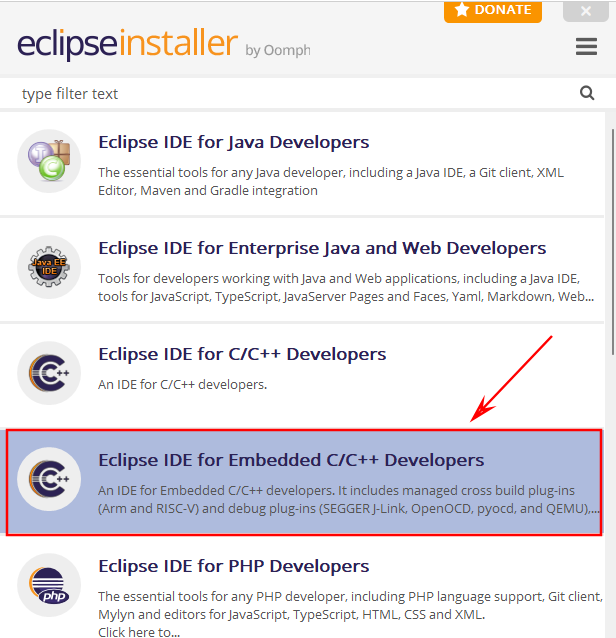

Google “segger j-link”
Choose “Download->J-Link / J-Trace”
Choose the version appropriate to your system to download
Install
Google “xPack Windows Build Tools”, and choose the GitHub one.
Click release jumping to the download page
Choose the latest version and download the zip file
Extract file and copy the path of the bin folder for further use.
Google “xPack GNU Arm Embedded GCC”, and choose the GitHub one.
Click release jumping to the download page
Choose the latest version and download the zip file
Extract file and copy the paths of the bin folder and the arm-none-eabi\bin folder for later use.
In the installer of Eclipse, choose “Eclipse IDE for Embeded C/C++ developers”.

Open Eclipse, select Window->Preferences
Add a new item in the environment.
Set up the PATH variable.
Apply the change.